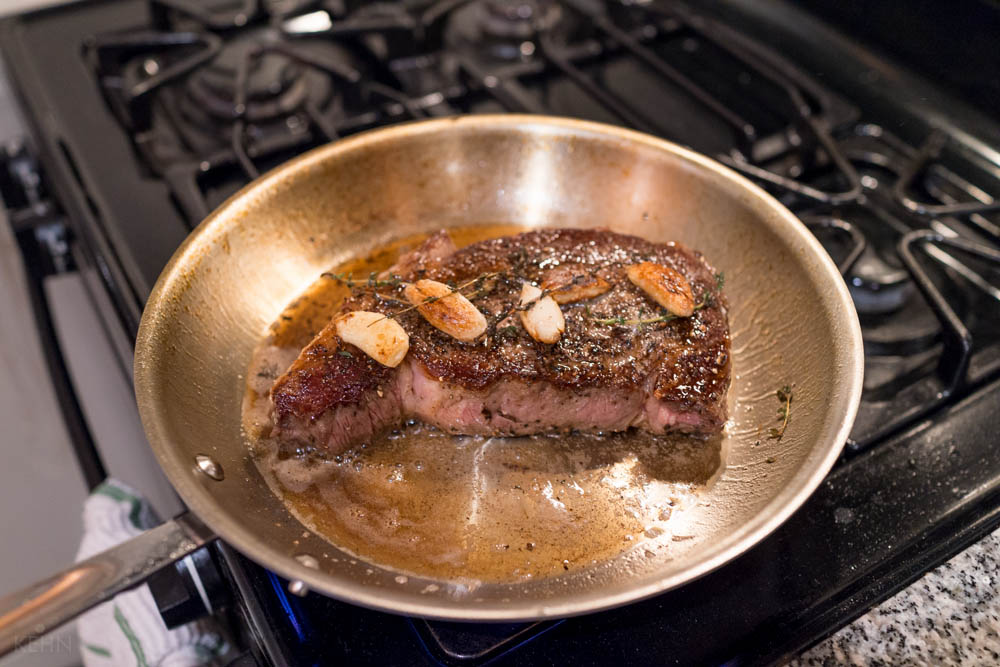

Pan Seared Steak

Description
This Pan-Seared Steak has a garlic rosemary-infused butter that makes it taste steakhouse quality.
You’ll be impressed at how easy it is to make the perfect steak; seared and caramelized on the outside, and so juicy inside.
Ingredients
- New York Steak
- Salt
- Pepper
- Garlic
- Rosemary
- Butter
Steps
- Use paper towels to pat the steaks dry to get a perfect sear and reduce oil splatter.
- Just before cooking steaks, sprinkle both sides liberally with salt and pepper.
- Preheat the pan on medium and brush with oil. Using just 1/2 Tbsp oil reduces splatter.
- Add steaks and sear each side 3-4 minutes until a brown crust has formed then use tongs to turn steaks on their sides and sear edges (1 min per edge).
- Melt in butter with quartered garlic cloves and rosemary sprigs.
- Tilt pan to spoon garlic butter over steaks and cook to your desired doneness.
- Remove steak and rest 10 minutes before slicing against the grain.
Home